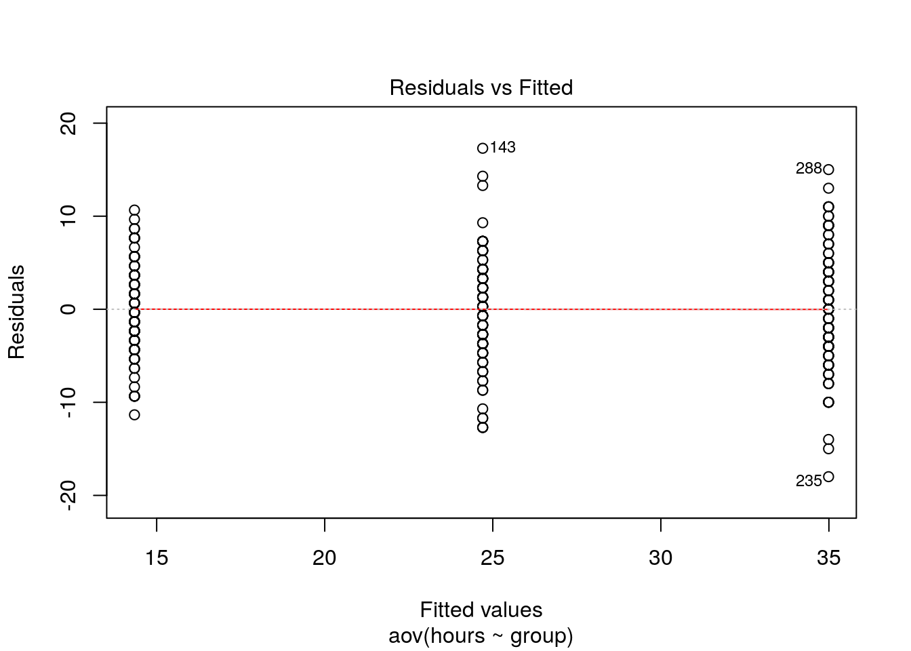
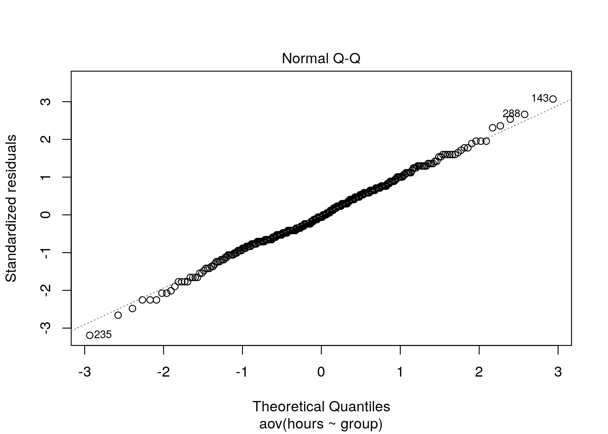

09-anova
0.1 Comparing several means
This chapter is primarily based on Field, A., Miles J., & Field, Z. (2012): Discovering Statistics Using R. Sage Publications, chapters 10 & 12.
You can download the corresponding R-Code here
0.1.1 Introduction
In the previous section we learned how to compare means using a t-test. The t-test has some limitations since it only lets you compare 2 means and you can only use it with one independent variable. However, often we would like to compare means from 3 or more groups. In addition, there may be instances in which you manipulate more than one independent variable. For these applications, ANOVA (ANalysis Of VAriance) can be used. Hence, to conduct ANOVA you need:
- A metric dependent variable (i.e., measured using an interval or ratio scale)
- One or more non-metric (categorical) independent variables (also called factors)
A treatment is a particular combination of factor levels, or categories. One-way ANOVA is used when there is only one categorical variable (factor). In this case, a treatment is the same as a factor level. N-way ANOVA is used with two or more factors. Note that we are only going to talk about a single independent variable in the context of ANOVA. If you have multiple independent variables please refere to the chapter on Regression.
Let’s use an example to see how ANOVA works. Similar to the previous example it is also imaginable that the music streaming service experiments with a recommendation system for user created playlists. We now have three groups, the control group “A” with the current system, treatment group “B” who have access to playlists created by other users but are not shown recommendations and treatment group “C” who are shown recommendations for user created playlists.
As always, we load and inspect the data first:
set.seed(321)
hours_population_1 <- rnorm(25000, 15, 5)
set.seed(125671)
sample_1 <- sample(1:25000, size = 100, replace = FALSE)
sample_1_hours <- hours_population_1[sample_1]
sample_1_df <- data.frame(hours = round(sample_1_hours,
0), group = "A")
sample_1_df$index <- 1:100
set.seed(321)
hours_population_2 <- rnorm(25000, 25, 6)
set.seed(125672)
sample_2 <- sample(1:25000, size = 100, replace = FALSE)
sample_2_hours <- hours_population_2[sample_2]
sample_2_df <- data.frame(hours = round(sample_2_hours,
0), group = "B")
sample_2_df$index <- 1:100
set.seed(321)
hours_population_3 <- rnorm(25000, 35, 6)
set.seed(125678)
sample_3 <- sample(1:25000, size = 100, replace = FALSE)
sample_3_hours <- hours_population_3[sample_3]
sample_3_df <- data.frame(hours = round(sample_3_hours,
0), group = "C")
sample_3_df$index <- 1:100
hours_abc <- rbind(sample_1_df, sample_2_df, sample_3_df)
head(hours_abc)The null hypothesis, typically, is that all means are equal (non-directional hypothesis). Hence, in our case:
\[H_0: \mu_1 = \mu_2 = \mu_3\]
The alternative hypothesis is simply that the means are not all equal, i.e.,
\[H_1: \textrm{Means are not all equal}\]
If you wanted to put this in mathematical notation, you could also write:
\[H_1: \exists {i,j}: {\mu_i \ne \mu_j} \]
To get a first impression if there are any differences in listening times across the experimental groups, we use the describeBy(...) function from the psych package:
##
## Descriptive statistics by group
## group: A
## vars n mean sd median trimmed mad min max range skew kurtosis
## X1 1 100 14.34 4.62 14 14.36 4.45 3 25 22 -0.03 -0.32
## se
## X1 0.46
## --------------------------------------------------------
## group: B
## vars n mean sd median trimmed mad min max range skew kurtosis se
## X1 1 100 24.7 5.81 25 24.79 5.93 12 42 30 0.05 0.2 0.58
## --------------------------------------------------------
## group: C
## vars n mean sd median trimmed mad min max range skew kurtosis
## X1 1 100 34.99 6.42 34.5 35.02 6.67 17 50 33 -0.05 -0.23
## se
## X1 0.64In addition, you should visualize the data using appropriate plots:
#Plot of means
library(plyr)
library(ggplot2)
ggplot(hours_abc, aes(group, hours)) +
stat_summary(fun.y = mean, geom = "bar", fill = "White", colour = "Black") +
stat_summary(fun.data = mean_cl_normal, geom = "pointrange") +
labs(x = "Experimental group ", y = "Listening time") +
theme_bw()
Figure 1: Plot of means
Note that ANOVA is an omnibus test, which means that we test for an overall difference between groups. Hence, the test will only tell you if the group means are different, but it won’t tell you exactly which groups are different from another.
So why don’t we then just conduct a series of t-tests for all combinations of groups (i.e., A vs. B, A vs. C, B vs. C)? The reason is that if we assume each test to be independent, then there is a 5% probability of falsely rejecting the null hypothesis (Type I error) for each test. In our case:
- A vs. B (α = 0.05)
- A vs. C (α = 0.05)
- B vs. C (α = 0.05)
This means that the overall probability of making a Type I error is 1-(0.953) = 0.143, since the probability of no Type I error is 0.95 for each of the three tests. Consequently, the Type I error probability would be 14.3%, which is above the conventional standard of 5%. This is also known as the family-wise or experiment-wise error.
0.1.2 Decomposing variance
The basic concept underlying ANOVA is the decomposition of the variance in the data. There are three variance components which we need to consider:
- We calculate how much variability there is between scores: Total sum of squares (SST)
- We then calculate how much of this variability can be explained by the model we fit to the data (i.e., how much variability is due to the experimental manipulation): Model sum of squares (SSM)
- … and how much cannot be explained (i.e., how much variability is due to individual differences in performance): Residual sum of squares (SSR)
The following figure shows the different variance components using a generalized data matrix:

Decomposing variance
The total variation is determined by the variation between the categories (due to our experimental manipulation) and the within-category variation that is due to extraneous factors (e.g., promotion of artists on a social network):
\[SS_T= SS_M+SS_R\]
To get a better feeling how this relates to our data set, we can look at the data in a slightly different way. Specifically, we can use the dcast(...) function from the reshape2 package to convert the data to wide format:
In this example, X1 from the generalized data matrix above would refer to the factor level “A”, X2 to the level “B”, and X3 to the level “C”. Y11 refers to the first data point in the first row (i.e., “13”), Y12 to the second data point in the first row (i.e., “21”), etc.. The grand mean (\(\overline{Y}\)) and the category means (\(\overline{Y}_c\)) can be easily computed:
## [1] 24.67667## hours_abc$group: A
## [1] 14.34
## --------------------------------------------------------
## hours_abc$group: B
## [1] 24.7
## --------------------------------------------------------
## hours_abc$group: C
## [1] 34.99To see how each variance component can be derived, let’s look at the data again. The following graph shows the individual observations by experimental group:

Figure 2: Sum of Squares
0.1.2.1 Total sum of squares
To compute the total variation in the data, we consider the difference between each observation and the grand mean. The grand mean is the mean over all observations in the data set. The vertical lines in the following plot measure how far each observation is away from the grand mean:

Figure 3: Total Sum of Squares
The formal representation of the total sum of squares (SST) is:
\[ SS_T= \sum_{i=1}^{N} (Y_i-\bar{Y})^2 \]
This means that we need to subtract the grand mean from each individual data point, square the difference, and sum up over all the squared differences. Thus, in our example, the total sum of squares can be calculated as:
\[ \begin{align} SS_T =&(13−24.67)^2 + (14−24.67)^2 + … + (2−24.67)^2\\ &+(21−24.67)^2 + (18-24.67)^2 + … + (17−24.67)^2\\ &+(30−24.67)^2 + (37−24.67)^2 + … + (28−24.67)^2\\ &=30855.64 \end{align} \]
You could also compute this in R using:
## [1] 30855.64For the subsequent analyses, it is important to understand the concept behind the degrees of freedom. Remember that in order to estimate a population value from a sample, we need to hold something in the population constant. In ANOVA, the df are generally one less than the number of values used to calculate the SS. For example, when we estimate the population mean from a sample, we assume that the sample mean is equal to the population mean. Then, in order to estimate the population mean from the sample, all but one scores are free to vary and the remaining score needs to be the value that keeps the population mean constant. In our example, we used all 300 observations to calculate the sum of square, so the total degrees of freedom (dfT) are:
\[\begin{equation} \begin{split} df_T = N-1=300-1=299 \end{split} \tag{1} \end{equation}\]
0.1.2.2 Model sum of squares
Now we know that there are 26646.33 units of total variation in our data. Next, we compute how much of the total variation can be explained by the differences between groups (i.e., our experimental manipulation). To compute the explained variation in the data, we consider the difference between the values predicted by our model for each observation (i.e., the group mean) and the grand mean. The group mean refers to the mean value within the experimental group. The vertical lines in the following plot measure how far the predicted value for each observation (i.e., the group mean) is away from the grand mean:

Figure 4: Model Sum of Squares
The formal representation of the model sum of squares (SSM) is:
\[ SS_M= \sum_{j=1}^{c} n_j(\bar{Y}_j-\bar{Y})^2 \]
where c denotes the number of categories (experimental groups). This means that we need to subtract the grand mean from each group mean, square the difference, and sum up over all the squared differences. Thus, in our example, the model sum of squares can be calculated as:
\[ \begin{align} SS_M &= 100*(15.47−24.67)^2 + 100*(24.88−24.67)^2 + 100*(33.66−24.67)^2 \\ &= 21321.21 \end{align} \]
You could also compute this manually in R using:
## [1] 21321.21In this case, we used the three group means to calculate the sum of squares, so the model degrees of freedom (dfM) are:
\[ df_M= c-1=3-1=2 \]
0.1.2.3 Residual sum of squares
Lastly, we calculate the amount of variation that cannot be explained by our model. In ANOVA, this is the sum of squared distances between what the model predicts for each data point (i.e., the group means) and the observed values. In other words, this refers to the amount of variation that is caused by extraneous factors, such as differences between product characteristics of the products in the different experimental groups. The vertical lines in the following plot measure how far each observation is away from the group mean:

Figure 5: Residual Sum of Squares
The formal representation of the residual sum of squares (SSR) is:
\[ SS_R= \sum_{j=1}^{c} \sum_{i=1}^{n} ({Y}_{ij}-\bar{Y}_{j})^2 \]
This means that we need to subtract the group mean from each individual observation, square the difference, and sum up over all the squared differences. Thus, in our example, the model sum of squares can be calculated as:
\[ \begin{align} SS_R =& (13−14.34)^2 + (14−14.34)^2 + … + (2−14.34)^2 \\ +&(21−24.7)^2 + (18−24.7)^2 + … + (17−24.7)^2 \\ +& (30−34.99)^2 + (37−34.99)^2 + … + (28−34.99)^2 \\ =& 9534.43 \end{align} \]
You could also compute this in R using:
## [1] 9534.43In this case, we used the 10 values for each of the SS for each group, so the residual degrees of freedom (dfR) are:
\[ \begin{align} df_R=& (n_1-1)+(n_2-1)+(n_3-1) \\ =&(100-1)+(100-1)+(100-1)=297 \end{align} \]
0.1.2.4 Effect strength
Once you have computed the different sum of squares, you can investigate the effect strength. \(\eta^2\) is a measure of the variation in Y that is explained by X:
\[ \eta^2= \frac{SS_M}{SS_T}=\frac{21321.21}{30855.64}=0.69 \]
To compute this in R:
## [1] 0.6909988The statistic can only take values between 0 and 1. It is equal to 0 when all the category means are equal, indicating that X has no effect on Y. In contrast, it has a value of 1 when there is no variability within each category of X but there is some variability between categories.
0.1.2.5 Test of significance
How can we determine whether the effect of X on Y is significant?
- First, we calculate the fit of the most basic model (i.e., the grand mean)
- Then, we calculate the fit of the “best” model (i.e., the group means)
- A good model should fit the data significantly better than the basic model
- The F-statistic or F-ratio compares the amount of systematic variance in the data to the amount of unsystematic variance
The F-statistic uses the ratio of mean square related to X (explained variation) and the mean square related to the error (unexplained variation):
\(\frac{SS_M}{SS_R}\)
However, since these are summed values, their magnitude is influenced by the number of scores that were summed. For example, to calculate SSM we only used the sum of 3 values (the group means), while we used 30 and 27 values to calculate SST and SSR, respectively. Thus, we calculate the average sum of squares (“mean square”) to compare the average amount of systematic vs. unsystematic variation by dividing the SS values by the degrees of freedom associated with the respective statistic.
Mean square due to X:
\[ MS_M= \frac{SS_M}{df_M}=\frac{SS_M}{c-1}=\frac{21321.21}{(3-1)} \]
Mean square due to error:
\[ MS_R= \frac{SS_R}{df_R}=\frac{SS_R}{N-c}=\frac{9534.43}{(300-3)} \]
Now, we compare the amount of variability explained by the model (experiment), to the error in the model (variation due to extraneous variables). If the model explains more variability than it can’t explain, then the experimental manipulation has had a significant effect on the outcome (DV). The F-radio can be derived as follows:
\[ F= \frac{MS_M}{MS_R}=\frac{\frac{SS_M}{c-1}}{\frac{SS_R}{N-c}}=\frac{\frac{21321.21}{(3-1)}}{\frac{9534.43}{(300-3)}}=332.08 \]
You can easily compute this in R:
## [1] 332.0806This statistic follows the F distribution with (m = c – 1) and (n = N – c) degrees of freedom. This means that, like the \(\chi^2\) distribution, the shape of the F-distribution depends on the degrees of freedom. In this case, the shape depends on the degrees of freedom associated with the numerator and denominator used to compute the F-ratio. The following figure shows the shape of the F-distribution for different degrees of freedom:

The F distribution
The outcome of the test is one of the following:
- If the null hypothesis of equal category means is not rejected, then the independent variable does not have a significant effect on the dependent variable
- If the null hypothesis is rejected, then the effect of the independent variable is significant
For 2 and 297 degrees of freedom, the critical value of F is 3.026 for α=0.05. As usual, you can either look up these values in a table or use the appropriate function in R:
## [1] 3.026153## [1] TRUEThe output tells us that the calculated test statistic exceeds the critical value. We can also show the test result visually:

Visual depiction of the test result
Thus, we conclude that because FCAL = 332.08 > FCR = 3.03, H0 is rejected!
Interpretation: one or more of the differences between means are statistically significant.
Reporting: There was a significant effect of promotion on sales levels, F(2,297) = 332.08, p < 0.05, \(\eta^2\) = 0.69.
Remember: This doesn’t tell us where the differences between groups lie. To find out which group means exactly differ, we need to use post-hoc procedures (see below).
You don’t have to compute these statistics manually! Luckily, there is a function for ANOVA in R, which does the above calculations for you as we will see in the next section.
0.1.3 One-way ANOVA
0.1.3.1 Basic ANOVA
As already indicated, one-way ANOVA is used when there is only one categorical variable (factor). Before conducting ANOVA, you need to check if the assumptions of the test are fulfilled. The assumptions of ANOVA are discussed in the following sections.
Independence of observations
The observations in the groups should be independent. Because we randomly assigned the listeners to the experimental conditions, this assumption can be assumed to be met.
Distributional assumptions
ANOVA is relatively immune to violations to the normality assumption when sample sizes are large due to the Central Limit Theorem. However, if your sample is small (i.e., n < 30 per group) you may nevertheless want to check the normality of your data, e.g., by using the Shapiro-Wilk test or QQ-Plot. In our example, we have 100 observations in each group which is plenty but let’s create another example with only 10 observations in each group. In the latter case we cannot rely on the Central Limit Theorem and we should test the normality of our data. This can be done using the Shapiro-Wilk Test, which has the Null Hypothesis that the data is normally distributed. Hence, an insignificant test results means that the data can be assumed to be approximately normally distributed:
set.seed(321)
hours_fewobs <- data.frame(hours = c(rnorm(10, 20,
5), rnorm(10, 40, 5), rnorm(10, 60, 5)), group = c(rep("A",
10), rep("B", 10), rep("C", 10)))
by(hours_fewobs$hours, hours_fewobs$group, shapiro.test)## hours_fewobs$group: A
##
## Shapiro-Wilk normality test
##
## data: dd[x, ]
## W = 0.91625, p-value = 0.3267
##
## --------------------------------------------------------
## hours_fewobs$group: B
##
## Shapiro-Wilk normality test
##
## data: dd[x, ]
## W = 0.91486, p-value = 0.3161
##
## --------------------------------------------------------
## hours_fewobs$group: C
##
## Shapiro-Wilk normality test
##
## data: dd[x, ]
## W = 0.9595, p-value = 0.7801Since the test result is insignificant for all groups, we can conclude that the data approximately follow a normal distribution.
We could also test the distributional assumptions visually using a Q-Q plot (i.e., quantile-quantile plot). This plot can be used to assess if a set of data plausibly came from some theoretical distribution such as the Normal distribution. Since this is just a visual check, it is somewhat subjective. But it may help us to judge if our assumption is plausible, and if not, which data points contribute to the violation. A Q-Q plot is a scatterplot created by plotting two sets of quantiles against one another. If both sets of quantiles came from the same distribution, we should see the points forming a line that’s roughly straight. In other words, Q-Q plots take your sample data, sort it in ascending order, and then plot them versus quantiles calculated from a theoretical distribution. Quantiles are often referred to as “percentiles” and refer to the points in your data below which a certain proportion of your data fall. Recall, for example, the standard Normal distribution with a mean of 0 and a standard deviation of 1. Since the 50th percentile (or 0.5 quantile) is 0, half the data lie below 0. The 95th percentile (or 0.95 quantile), is about 1.64, which means that 95 percent of the data lie below 1.64. The 97.5th quantile is about 1.96, which means that 97.5% of the data lie below 1.96. In the Q-Q plot, the number of quantiles is selected to match the size of your sample data.
To create the Q-Q plot for the normal distribution, you may use the qqnorm() function, which takes the data to be tested as an argument. Using the qqline() function subsequently on the data creates the line on which the data points should fall based on the theoretical quantiles. If the individual data points deviate a lot from this line, it means that the data is not likely to follow a normal distribution.
qqnorm(hours_fewobs[hours_fewobs$group == "A", ]$hours)
qqline(hours_fewobs[hours_fewobs$group == "A", ]$hours)
Figure 6: Q-Q plot 1
qqnorm(hours_fewobs[hours_fewobs$group == "B", ]$hours)
qqline(hours_fewobs[hours_fewobs$group == "B", ]$hours)
Figure 7: Q-Q plot 2
qqnorm(hours_fewobs[hours_fewobs$group == "C", ]$hours)
qqline(hours_fewobs[hours_fewobs$group == "C", ]$hours)Figure 8: Q-Q plot 3
The Q-Q plots suggest an approximately Normal distribution. If the assumption had been violated, you might consider transforming your data or resort to a non-parametric test.
Homogeneity of variance
Let’s return to our original dataset with 100 observations in each group for the rest of the analysis.
You can test the homogeneity of variances in R using Levene’s test:
## Levene's Test for Homogeneity of Variance (center = mean)
## Df F value Pr(>F)
## group 2 4.9678 0.007548 **
## 297
## ---
## Signif. codes: 0 '***' 0.001 '**' 0.01 '*' 0.05 '.' 0.1 ' ' 1The null hypothesis of the test is that the group variances are equal. Thus, if the test result is significant it means that the variances are not equal. If we cannot reject the null hypothesis (i.e., the group variances are not significantly different), we can proceed with the ANOVA as follows:
## Df Sum Sq Mean Sq F value Pr(>F)
## group 2 21321 10661 332.1 <2e-16 ***
## Residuals 297 9534 32
## ---
## Signif. codes: 0 '***' 0.001 '**' 0.01 '*' 0.05 '.' 0.1 ' ' 1You can see that the p-value is smaller than 0.05. This means that, if there really was no difference between the population means (i.e., the Null hypothesis was true), the probability of the observed differences (or larger differences) is less than 5%.
To compute η2 from the output, we can extract the relevant sum of squares as follows
## [1] 0.6909988You can see that the results match the results from our manual computation above (\(\eta^2 =\) 0.69).
The aov() function also automatically generates some plots that you can use to judge if the model assumptions are met. We will inspect two of the plots here.
We will use the first plot to inspect if the residual variances are equal across the experimental groups:

Generally, the residual variance (i.e., the range of values on the y-axis) should be the same for different levels of our independent variable. The plot shows, that there are some slight differences. Notably, the range of residuals is higher in group “B” than in group “C”. However, the differences are not that large and since the Levene’s test could not reject the Null of equal variances, we conclude that the variances are similar enough in this case.
The second plot can be used to test the assumption that the residuals are approximately normally distributed. We use a Q-Q plot to test this assumption:

The plot suggests that, the residuals are approximately normally distributed. We could also test this by extracting the residuals from the anova output using the resid() function and using the Shapiro-Wilk test:
##
## Shapiro-Wilk normality test
##
## data: resid(aov)
## W = 0.99723, p-value = 0.8925Confirming the impression from the Q-Q plot, we cannot reject the Null that the residuals are approximately normally distributed.
Note that if Levene’s test would have been significant (i.e., variances are not equal), we would have needed to either resort to non-parametric tests (see below), or compute the Welch’s F-ratio instead:
##
## One-way analysis of means (not assuming equal variances)
##
## data: hours and group
## F = 350.93, num df = 2, denom df = 194, p-value < 2.2e-16You can see that the results are fairly similar, since the variances turned out to be fairly equal across groups.
0.1.3.2 Post-hoc tests
Provided that significant differences were detected by the overall ANOVA you can find out which group means are different using post hoc procedures. Post hoc procedures are designed to conduct pairwise comparisons of all different combinations of the treatment groups by correcting the level of significance for each test such that the overall Type I error rate (α) across all comparisons remains at 0.05.
In other words, we rejected H0: μ1= μ2= μ3, and now we would like to test:
Test1:
\[H_0: \mu_1 = \mu_2\]
Test2:
\[H_0: \mu_1 = \mu_3\]
Test3:
\[H_0: \mu_2 = \mu_3\]
There are several post hoc procedures available to choose from. In this tutorial, we will cover Bonferroni and Tukey’s HSD (“honest significant differences”). Both tests control for family-wise error. Bonferroni tends to have more power when the number of comparisons is small, whereas Tukey’ HSDs is better when testing large numbers of means.
0.1.3.2.1 Bonferroni
One of the most popular (and easiest) methods to correct for the family-wise error rate is to conduct the individual t-tests and divide α by the number of comparisons („k“):
\[ p_{CR}= \frac{\alpha}{k} \]
In our example with three groups:
\[p_{CR}= \frac{0.05}{3}=0.017\]
Thus, the “corrected” critical p-value is now 0.017 instead of 0.05 (i.e., the critical t value is higher). You can implement the Bonferroni procedure in R using:
bonferroni <- pairwise.t.test(hours_abc$hours, hours_abc$group,
data = hours_abc, p.adjust.method = "bonferroni")
bonferroni##
## Pairwise comparisons using t tests with pooled SD
##
## data: hours_abc$hours and hours_abc$group
##
## A B
## B <2e-16 -
## C <2e-16 <2e-16
##
## P value adjustment method: bonferroniIn the output, you will get the corrected p-values for the individual tests. In our example, we can reject H0 of equal means for all three tests, since p < 0.05 for all combinations of groups.
Note the difference between the results from the post-hoc test compared to individual t-tests. For example, when we test the “B” vs. “C” groups, the result from a t-test would be:
data_subset <- subset(hours_abc, group != "A")
ttest <- t.test(hours ~ group, data = data_subset,
var.equal = TRUE)
ttest##
## Two Sample t-test
##
## data: hours by group
## t = -11.884, df = 198, p-value < 2.2e-16
## alternative hypothesis: true difference in means is not equal to 0
## 95 percent confidence interval:
## -11.997471 -8.582529
## sample estimates:
## mean in group B mean in group C
## 24.70 34.99Usually the p-value is lower in the t-test, reflecting the fact that the family-wise error is not corrected (i.e., the test is less conservative). In this case the p-value is extremely small in both cases and thus indistinguishable.
0.1.3.2.2 Tukey’s HSD
Tukey’s HSD also compares all possible pairs of means (two-by-two combinations; i.e., like a t-test, except that it corrects for family-wise error rate).
Test statistic:
\[\begin{equation} \begin{split} HSD= q\sqrt{\frac{MS_R}{n_c}} \end{split} \tag{2} \end{equation}\]
where:
- q = value from studentized range table (see e.g., here)
- MSR = Mean Square Error from ANOVA
- nc = number of observations per group
- Decision: Reject H0 if
\[|\bar{Y}_i-\bar{Y}_j | > HSD\]
The value from the studentized range table can be obtained using the qtukey() function.
## [1] 3.331215Hence:
\[HSD= 3.33\sqrt{\frac{33.99}{100}}=1.94\]
Or, in R:
## [1] 1.887434Since all mean differences between groups are larger than 1.906, we can reject the null hypothesis for all individual tests, confirming the results from the Bonferroni test. To compute Tukey’s HSD, we can use the appropriate function from the multcomp package.
##
## Simultaneous Tests for General Linear Hypotheses
##
## Multiple Comparisons of Means: Tukey Contrasts
##
##
## Fit: aov(formula = hours ~ group, data = hours_abc)
##
## Linear Hypotheses:
## Estimate Std. Error t value Pr(>|t|)
## B - A == 0 10.3600 0.8013 12.93 <2e-16 ***
## C - A == 0 20.6500 0.8013 25.77 <2e-16 ***
## C - B == 0 10.2900 0.8013 12.84 <2e-16 ***
## ---
## Signif. codes: 0 '***' 0.001 '**' 0.01 '*' 0.05 '.' 0.1 ' ' 1
## (Adjusted p values reported -- single-step method)##
## Simultaneous Confidence Intervals
##
## Multiple Comparisons of Means: Tukey Contrasts
##
##
## Fit: aov(formula = hours ~ group, data = hours_abc)
##
## Quantile = 2.3558
## 95% family-wise confidence level
##
##
## Linear Hypotheses:
## Estimate lwr upr
## B - A == 0 10.3600 8.4723 12.2477
## C - A == 0 20.6500 18.7623 22.5377
## C - B == 0 10.2900 8.4023 12.1777We may also plot the result for the mean differences incl. their confidence intervals:

Figure 9: Tukey’s HSD
You can see that the CIs do not cross zero, which means that the true difference between group means is unlikely zero.
## [1] 14.34## [1] 24.7## [1] 34.99## [1] 10.36ci_med_high_lower <- mean_diff_high_med - hsd
ci_med_high_upper <- mean_diff_high_med + hsd
ci_med_high_lower## [1] 8.472566## [1] 12.24743## [1] 20.65ci_low_high_lower <- mean_diff_high_low - hsd
ci_low_high_upper <- mean_diff_high_low + hsd
ci_low_high_lower## [1] 18.76257## [1] 22.53743## [1] 10.29ci_low_med_lower <- mean_diff_med_low - hsd
ci_low_med_upper <- mean_diff_med_low + hsd
ci_low_med_lower## [1] 8.402566## [1] 12.17743Reporting of post hoc results:
The post hoc tests based on Bonferroni and Tukey’s HSD revealed that people listened to music significantly more when:
- they had access to user created playlists vs. those who did not,
- they got recommendations vs. those who did not. This is true for both the control group “A” as well as treatment “B”.
The following video summarizes how to conduct a one-way ANOVA in R